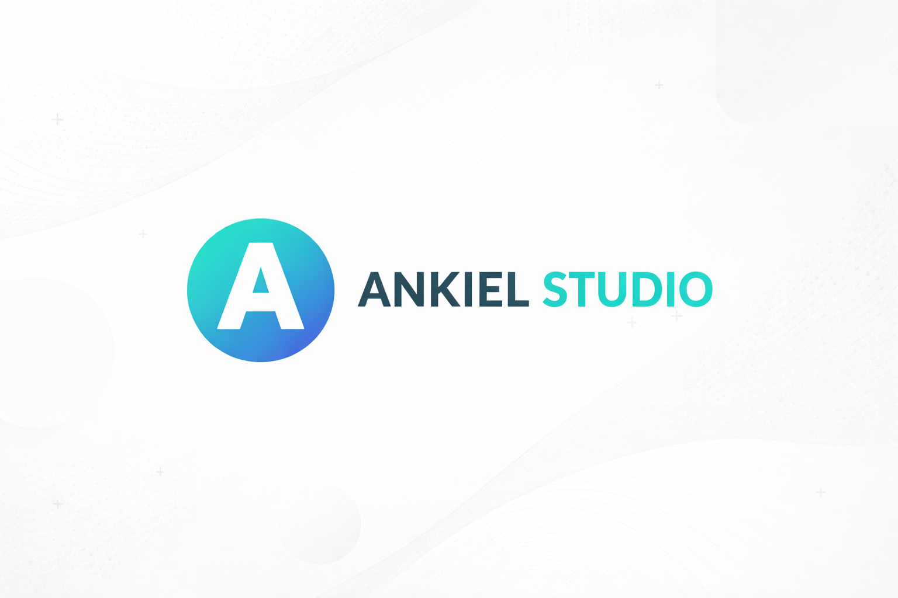

Cinematic website concept
Strona, ktora prowadzi jak krotki film.
Koncepcja dla Ankiel Studio: scroll zmienia swiatlo, warstwy, tekstury i tempo narracji. Uzytkownik nie przeskakuje po sekcjach, tylko wchodzi w proces powstawania premium strony.
wireframe
brand
launch
Od szkicu do formy
Najpierw pojawia sie struktura. Potem charakter.
Linie techniczne i surowy layout przechodza w dopracowany ekran: typografia, rytm, kolor, CTA i warstwa ruchu.
01 / Signal
02 / Direction
03 / Build
Portfolio jako scena
Projekty nie sa kratka. Sa kadrami z historii marki.
Zamiast zwyklej galerii: przesuwajace sie plansze, glebie, swiatlo i przed/po ukryte pod przytrzymaniem.
Przytrzymaj panel, zeby zobaczyc warstwe "before".
Finalny kadr
Na koncu zostaje jasna decyzja: zaczynamy projekt.
Cala narracja prowadzi do jednego spokojnego CTA. Bez chaosu, bez przypadkowych efektow, tylko premium odczucie i prosty nastepny krok.
Zaprojektujmy to